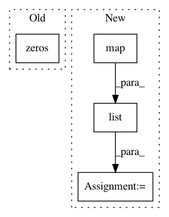

01dcd58869385345b5f5fdbbb1c1bf5273c3a671,deepBach.py,,,#,1090
Before Change
if args.midi_file == "datasets/god_save_the_queen.mid":
fermatas_melody = np.concatenate((np.zeros(15 * 4),
np.ones(3 * 4),
np.zeros(21 * 4),
np.ones(3 * 4))
)
elif args.reharmonization:
After Change
// load dataset
X, num_voices, index2notes, note2indexes = pickle.load(open(pickled_dataset,
"rb"))
num_pitches = list(map(len, index2notes))
timesteps = args.timesteps
batch_size = args.batch_size_train
samples_per_epoch = args.samples_per_epoch
In pattern: SUPERPATTERN
Frequency: 3
Non-data size: 4
Instances
Project Name: Ghadjeres/DeepBach
Commit Name: 01dcd58869385345b5f5fdbbb1c1bf5273c3a671
Time: 2016-12-29
Author: hadjeres.g@gmail.com
File Name: deepBach.py
Class Name:
Method Name:
Project Name: jsalt18-sentence-repl/jiant
Commit Name: 2573c649518391ada6214cfc72d20421dfac4072
Time: 2018-03-16
Author: wang.alex.c@gmail.com
File Name: src/preprocess.py
Class Name:
Method Name: get_embeddings
Project Name: automl/SMAC3
Commit Name: 293cde788179af8fa396b2b319e138e580f14e33
Time: 2016-01-19
Author: marius.rks@googlemail.com
File Name: smac/smbo/intensification.py
Class Name: Intensifier
Method Name: intensify